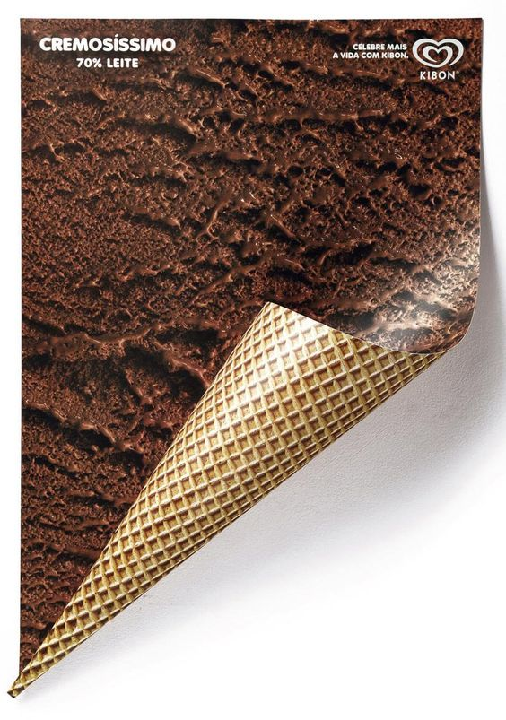
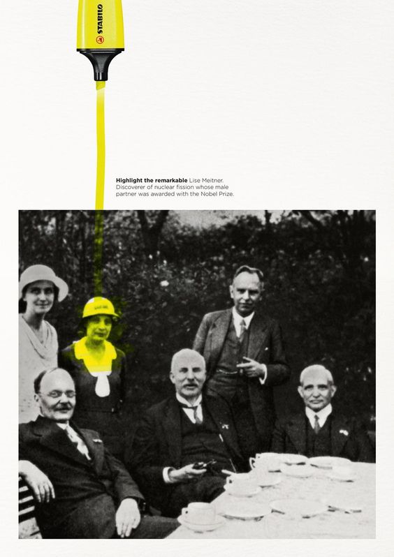
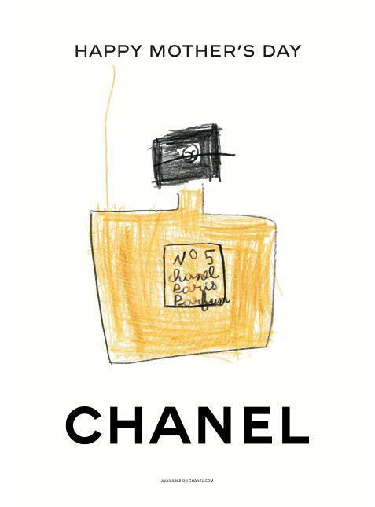
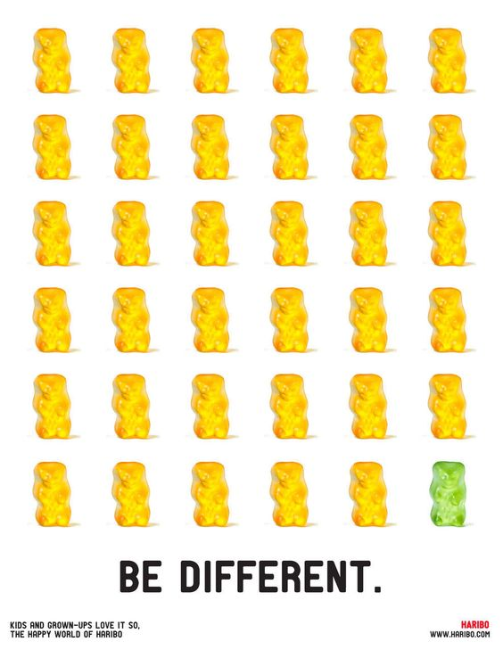

Marketing
Kibon
Carteles para Kibon realizados por la diseñadora Renata El Dib. Pósteres laminados que hacen alusión a conos de helado. En este caso se utilizó impresión a doble cara y solo una parte del cartel se pega a la superficie y la otra se enrolla, para que parezca el cono.
Stabilo
La nueva campaña de Stabilo subraya otra parte de la historia: las mujeres importantes que pasaron desapercibidas.
La nueva campaña de Stabilo emerge como una narrativa única, desenterrando una parte esencial de la historia que ha permanecido oculta por mucho tiempo: el papel crucial de mujeres notables que han pasado desapercibidas en el tejido de nuestro pasado. La campaña se convierte en una poderosa herramienta para destacar la contribución invaluable de estas mujeres y desafiar la invisibilidad que han experimentado.
En el centro de la campaña, el subrayador Stabilo se convierte en un símbolo de reconocimiento, una herramienta para iluminar las historias que merecen ser contadas.
Chanel
CHANEL celebra el día de la Madre con dibujos infantiles de sus productos más icónicos.
Este cartel publicitario no solo es un homenaje visual al Día de la Madre, sino que también representa una brillante colaboración entre la sofisticación atemporal de CHANEL y la expresión artística inocente de la infancia, creando una pieza única que emociona y celebra el amor maternal de una manera auténtica y encantadora.
Haribo
Este cartel publicitario de HARIBO es una representación visual de la alegría de ser único. Invita a los consumidores a abrazar sus diferencias, animándolos a disfrutar de la diversidad de sabores y colores que HARIBO ofrece, todo mientras transmiten un mensaje positivo y divertido.